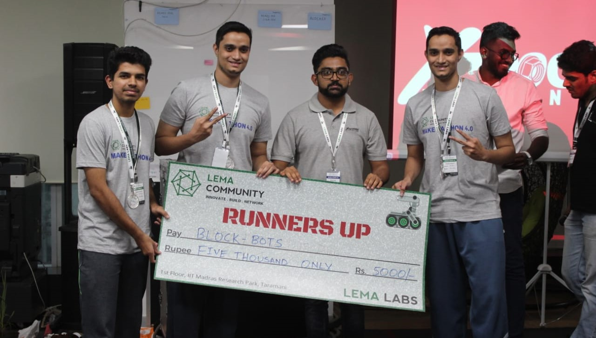
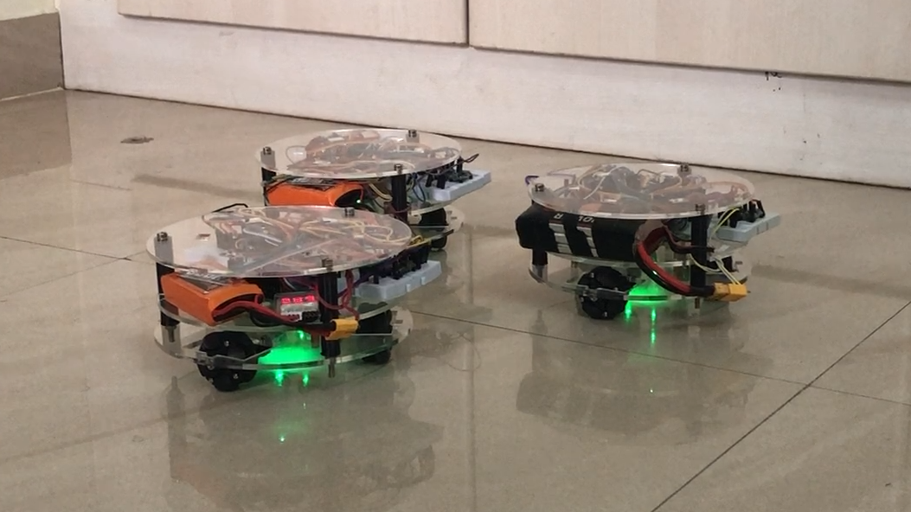
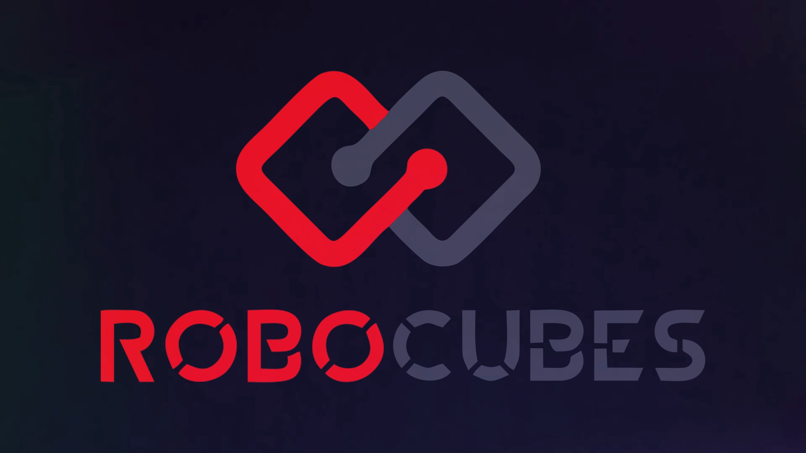
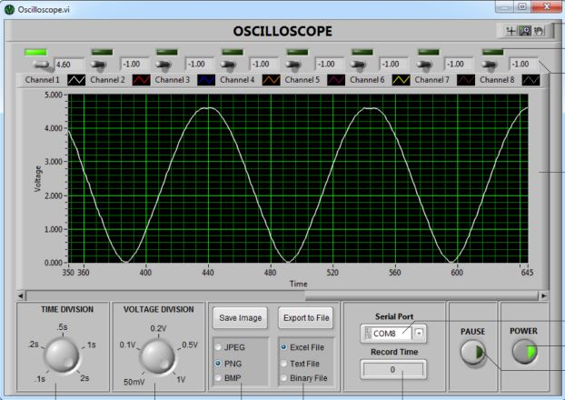
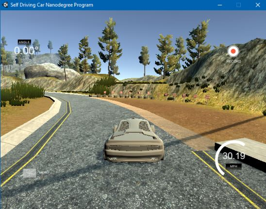
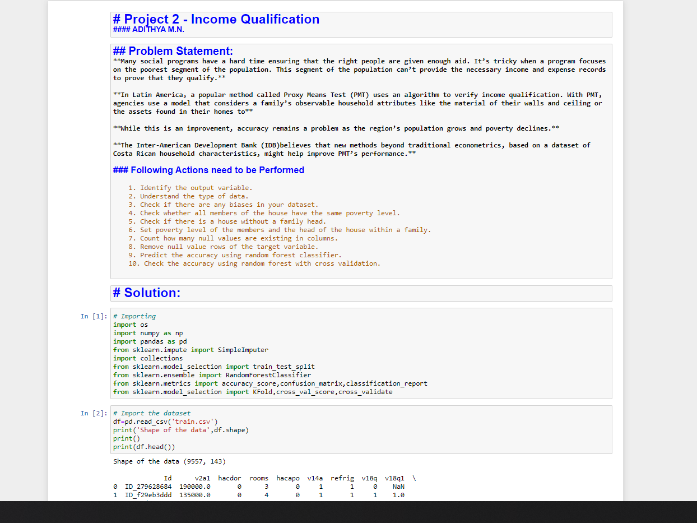

Accomplishments and Awards
Patent - An Onboard Hardware Addressing system for Modular Reconfigurable Robots
- This invention envisages an on-board hardware addressing system for a modular reconfigurable robot (MRR) that detect the robot configuration autonomously. The MRR is composed of atleast one central module and plurality of peripheral modules each of whom have dockable faces.
- This invention is low cost, hardware level addressing system for the MRR. The modified power rails connect pins to a unique hardware address. Thereby autonomously detecting the configuration the MRR is currently in.
(Published - 202041046707)
Make-a-thon - Awarded Second Place

"Make-a-thon" is a Hackathon for robotics related projects where, Participants (students and working professionals alike) from colleges and MNC’s across Chennai are assigned a mentor to work on ideas. I was a part of Team BlockBOTS, and our idea was 'BlockBOTS - A reconfigurable robot constructed using modular blocks that can be connected together to form various configurations leading to distinct functionalities.' This idea was completely turned into a product during my time at the university as a minor project and was commended.
Self Driving Cars Specialization

This is a specialization being offered by University of Toronto in Coursera. This a 4 course specialization which teaches the complete fundamentals of a Self-Driving Cars. With indepth explanation of all the fudamental concepts that are being applied to current generation Self-Driving Cars
My curiosity to implement everything I learn in a Pratical way tasked me to develop many projects. Here is a list of a few projects I have implemented during my undergraduate degree.
Development of a Collaborative Multi-Robot System for Material Handling

Multiple Mobile robot transport a material from one location to another autonomously within the arena by collaborating with each other.
Developed a novel "Composite Robot Algorithm" for a holonomic robot formation to trans-port the object.
Configured a co-opertive path planning algorithm that provides three collision free paths from a single set of waypoints.
RoboCUBES - An Intelligent, Modular, Reconfigurable Robotics Platform

Built a Modular Robotics Platform using modular cubes which when joined together, forms a configuration and performs a specific function based on the detected configuration
Configured a completely autonomous detection based on a novel “Self-Awareness” algorithm.
Implemented a Novel Hardware Addressing system designed to interact with the algorithm and detect the configuration autonomously.
Finalised the various configurations for the first generation of RoboCUBES.
Developed on Object-detection/tracking and Lane Detection for AI/CV Cube.
Path Planning in a 2D Environment
Developed a differential drive robot model and built a custom 2D binary occupancy grid in which path planning was simulated.
Implemented probabilistic roadmaps as the motion planner to find the shortest path between the locations and a modified pure pursuit controller for efficient path tracking; in the software stack.
8 Channel PC Based Oscilloscope (Virtual DSO)

One of the main goal of this research/project was to make a low cost oscilloscope. As we already know industrial Oscilloscope such as the 'Key Sight InfiniiVision DSO-X 2002A' are the industrial standard for oscilloscope and a student often might have difficulties trying to get ther hands on one. This research/project's primary aim was to eliminate the need for an oscilloscope and achieve the same with in a Virtual Instrument such that its more accessible. My main takeaway from this project was
Coordinated with a team of 5 with the aim of creating a “low cost” PC Based Oscilloscope.
Developed an 8 channel Virtual DSO. Implemented in NI LabVIEW Virtual Instrument.
Developed the design for the Hardware Interfacing unit.
Improved the accuracy and response time of the V-DSO.
The links provided below contains the report/paper where a comparitive study of our DSO with the industrial Standard Oscilloscope hass been made. Another link is for the github repository which has things explained in detail.
Behavioral Cloning in Autonomous Vehicles

Behavioral Cloning in Autonomous Vehicles using Deep Learning
Developed a Self Driving Car by Behavioral Cloning using the Self Driving Car Simulator in Unity
Data Augmentation was performed to the train and test data
Used a “Modified LeNet Model” Neural Network Architecture to Train and Test the Simulation Data
The trained model was tested for autonomy in a new track simulation.
Main Takeaways : Data Augmentation - Image Classification using Keras - Neural Networks
Income Qualification using Machine Learning (Proxy Means Test)

This project is a pure Machine Learning task aimed to use Random Tree Classifier to classify a population to based on their Income
Trained the dataset in a 80% / 20% split with a Random Forest Classifier and Crossvalidated with the K-Fold Procedure. Achieved 94% accuracy in the trained model.
A Brief "Write-up" About the project implementation along with the soure code to training and classification is linked below.
Certifications and Trainings
Here is a List of the major Certifications and Trainings undergone by me during my undergraduate. These Certifications and Trainings were vital in improving my fundamentals in my interest fields both Theoretically and Pratically.I have also completed many online certifications from various platforms including Coursera, Edx, Udemy and SimpliLearn which helped me understand the fundamentals of many high level applications.
Autonomous Mobile Robots - EdX (ETHx Zurich) This course taught me the fundamentals of mobile robots . The objective of this course is to provide the basic concepts and algorithms required to develop mobile robots that act autonomously in complex environments. The main emphasis is put on mobile robot locomotion and kinematics, environment perception, probabilistic map based localization and mapping, and motion planning. The lectures and exercises of this course introduce several types of robots such as wheeled robots, legged robots and drones.
Control Of Mobile Robots - Coursera (Georgia Institute of Technology)Control of Mobile Robots is a course that focuses on the application of modern control theory to the problem of making robots move around in safe and effective ways. One of my main take away from this course is, creating a model for a differential drive robot by solving the Navigation problem using switches to switch between "Goal to Goal" behaviour and "Obstacle Avoidance" behaviour and being able to scale up the model to other robots as well.
Machine Learning Advanced Certification Training - Simpli Learn This online course offers an in-depth overview of Machine Learning topics including working with real-time data, developing algorithms using supervised & unsupervised learning, regression, classification, and time series modeling. Learn how to use Python in this Machine Learning certification training to draw predictions from data. One of the task solved by me was to predict the needs of families using a PMT (Proxy Means test) to classify the families and predict their level of need using a Random Forest Classifier. Here is the link
Kaizen Robotics Program: Basic - Lema Labs Kaizen Robotics Program is a certificate training program aimed at providing students a steep learning curve in the field of Robotics & Embedded Systems. The program comprises of 40 hours of Intensive Training program where I was taught the fundamentals to robotics and implemented various projects Here is the link to the projects. One of the project was to create a "Hand-Writing Robot" a detailed report of the project is here.
Kaizen Robotics Program: Advanced - Lema LabsThis is the second level of Kaizen Robotics Program. The program also comprises of 40 hours of Intensive Training. Where I was tasked and guided to commplete 7 projects; Gesture Controlled Robot, Maze Solver with Shortest Path Algorithm to name a few. Here is a link to the projects.
Electro Hydraulics and Proportional Hydraulics Indutrial Training - Rexroth Bosch This is an industrial training program offered by "SRM-BRIN Center of Excellence in Automation Technologies" in parternship with Rexorth Bosch. This was 50 hours intensive training program where I gained experience in fundamentals of Industrial Automation and Fluid Power Systems and Industrial-level projects of Automation technologies being implemented in industries.
The Complete Self Driving Car Course: Applied Deep Learning - UdemyThis course taught me the fundamentals of Deep Learning and simulators. I built a fully functional self-driving car fuelled entirely by Deep Learning. This autonomous car was trained on an "Modified LeNet Model" Neural Network Architecture, where the training and Test data sets were provided by the use of Unity Self Driving Car Simulator. These datasets were used to train the model and the Trained model was autonmously tested in a New Track simulation. Here is the link to the Project.
Structuring ML Projects
This course made me understand how to diagnose errors in a machine learning system.Learnn how to prioritize the most promising directions for reducing error. Understood complex ML settings, such as mismatched training/test sets, and comparing to and/or surpassing human-level performanceand learnt how to apply end-to-end learning, transfer learning, and multi-task learning.